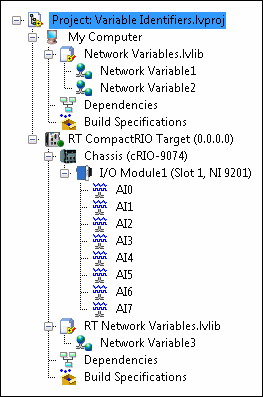

LabVIEW identifies each shared variable with a variable identifier URL. To read and write shared variables programmatically, you can specify the variable identifier URLs of those shared variables with the shared variable refnum in input of the Shared Variable functions.
|
Note��You also can search for shared variables programmatically to read and write multiple shared variables with relatively little LabVIEW code. |
The following list summarizes the set of LabVIEW constructs that relate to shared variables and variable identifier URLs.
|
Note��(Real-Time Module) You can use the Name field on the General Properties page of the RT Target Properties dialog box to specify an RT target name. |
The URL syntax of a variable identifier is:
[Variable Engine]://[Host Name]/[Container Name]/[Variable Name]
You must specify the Container Name and Variable Name components for all variable identifier URLs. However, you can omit the Variable Engine if it is implied by the class. You also can omit the Host Name if the variables are hosted on the same computer where the VI runs.
For example, the following LabVIEW project contains network-published shared variables, which are listed under the Network Variables.lvlib container, and I/O variables, which are listed under the I/O Module1 container.

The following table includes the full variable identifier URLs for several of the variables in this project.
| Variable Name | Variable Type | Variable Identifier URL |
|---|---|---|
| Network Variable1 | Network-Published Shared Variable | ni.var.psp://My Computer/Network Variables/Network Variable1 |
| AI0 | I/O Variable | ni.var.io://RT CompactRIO Target/I%2FO Module1/AI0 |
| Network Variable3 | Network-Published Shared Variable | ni.var.psp://RT CompactRIO Target/RT Network Variables/Network Variable3 |
The variable identifier URL is not case sensitive. However, you must replace reserved characters with the corresponding escape codes to prevent parsing errors. For example, you must replace the ⁄ character with the escape code %2F.
The Variable Engine component of the URL depends on the type of variable you plan to read or write. The following table includes the Variable Engine URL for each type of shared variable that the Shared Variable functions support.
| Type | Variable Engine URL |
|---|---|
| Network-published shared variable, I/O variable, or I/O alias (remote access) | ni.var.psp |
| I/O variable or I/O alias (local access) | ni.var.io |
You can use either the PSP Variable Engine or the I/O Variable Engine to access a network-published I/O variable or I/O alias. Use the I/O Variable Engine (ni.var.io) to read or write a network-published I/O variable or I/O alias locally. Use the PSP Variable Engine (ni.var.psp) to read or write a network-published I/O variable or I/O alias remotely.
The Variable Engine component of the URL is implied and therefore optional when using one of the following classes:
In this case, you can omit the Variable Engine component of the URL and use the following URL syntax:
//[Host Name]/[Container Name]/[Variable Name]
If you are using a generic class that does not imply the Variable Engine and you do not specify the Variable Engine, LabVIEW attempts to resolve the variable identifier URL by searching variable engines in the following order of precedence.
In this case, if a matching URL exists in multiple engines, LabVIEW uses the first matching URL.
The [Host Name] component of the variable identifier URL is optional. You can specify the host name as a DNS name, a target name, or an IP address. However, if you do not specify a host name in the variable identifier URL, LabVIEW assumes the host is the same computer where you run the VI. You also can use the string localhost to explicitly specify the computer where you run the VI. To avoid name collisions, use unique names whenever possible.
If you do not need to specify a host name, you can use the following URL syntax:
/[Container Name]/[Variable Name]
If the host name you specify can be interpreted in more than one way, for example both as a project name and as a DNS name, LabVIEW searches for a valid interpretation of the specified host name in the following order of precedence.
The name of each shared variable in a container must be unique. However, because the variable identity includes the container name, variables in different containers can share the same variable name and still maintain unique variable identities.